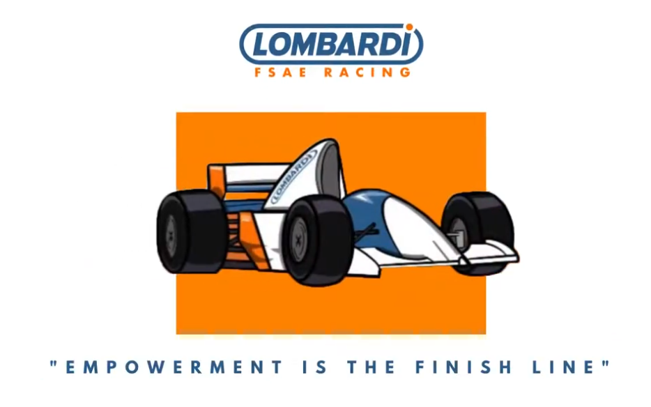

Lombardi Racing Experience
Club Overview
From August 2019 to January 2020, I was part of Lombardi Racing at the University of Texas at El Paso. This unique student organization provided me with invaluable hands-on experience in various aspects of automotive engineering and racing.
Key Aspects of the Experience
- Comprehensive Skill Development: Gained proficiency in CAD, analysis, time management, presentation, and teamwork.
- Hands-On Experience: Acquired practical exposure to manufacturing processes and techniques.
- Unique Opportunities: Engaged in experiences not typically available in other student organizations at UTEP.
Skills Developed
Technical Skills
- CAD (Computer-Aided Design): Learned to create detailed 3D models of racing car components.
- Analysis: Developed skills in structural and aerodynamic analysis of vehicle designs.
- Manufacturing Processes: Gained hands-on experience with various fabrication techniques used in racing car production.
Soft Skills
- Time Management: Learned to balance multiple project deadlines and academic responsibilities.
- Presentation Skills: Developed ability to effectively communicate technical concepts to diverse audiences.
- Teamwork: Collaborated with a diverse group of students to achieve common goals in a high-pressure environment.
Notable Projects
While specific projects are not mentioned, typical activities in such organizations might include:
- Designing and building a racing vehicle for intercollegiate competitions.
- Optimizing vehicle performance through iterative design and testing processes.
- Participating in local or national racing events and engineering competitions.
Impact on Professional Development
- Enhanced problem-solving skills through real-world engineering challenges.
- Developed a strong foundation in automotive engineering principles.
- Gained experience in project management and team leadership.
- Built a network of peers and professionals in the automotive and racing industries.
Reflection
My time with Lombardi Racing was transformative, providing me with a unique blend of technical knowledge and practical skills. This experience not only enhanced my academic learning but also gave me valuable insights into the automotive industry and the challenges of high-performance engineering.
Back to Portfolio